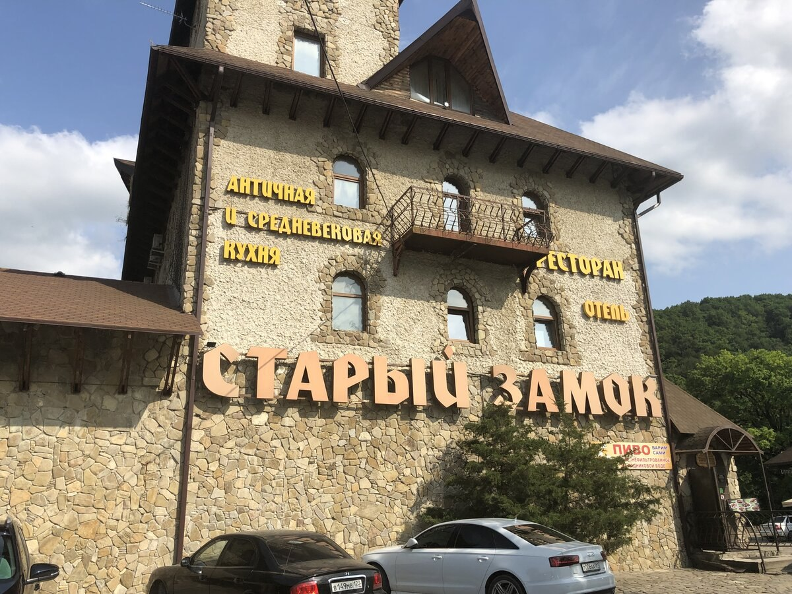

1. Ресторан "Русский чай"
Ресторан "Русский чай" находится в городе Подольск, на улице Кирова, дом 60. Это уютное заведение с
русской кухней и широким выбором блюд. В ресторане есть как общий зал для гостей, так и отдельные
VIP-комнаты для проведения мероприятий. В ресторане "Русский чай" подают блюда русской кухни и
европейской. Для удобства гостей в ресторане есть бесплатная парковка, а также возможность оплаты
картами.

2. Ресторан "Старый замок"
Ресторан "Старый замок" находится в городе Подольск, на проспекте Ленина, дом 107/49. Это уютный
ресторан, где можно провести время в приятной атмосфере и насладиться блюдами европейской кухни. В
ресторане есть большой выбор напитков и закусок, а также возможность заказать блюда на вынос. Также есть
возможность проведения банкетов и торжественных мероприятий в специальных залах.
3. Кафе "Оранжерея"
Кафе "Оранжерея", по адресу улица Кирова дом 60 - отличный выбор для того, чтобы спокойно отдохнуть в
приятной обстановке и с вкусной едой. Здесь предлагаете европейская кухня, японская кухня и большое
разнообразие сочных блюд на открытом огне
4. Ресторан "Капитал"
Ресторан "Капитал" находится в городе Подольск на улице Кирова, дом 68. Это стильный и современный
ресторан с высоким уровнем сервиса и разнообразным меню. Здесь есть большой выбор блюд европейской и
русской кухни. Также здесь предлагают блюда из морепродуктов и мяса. Для любителей сладкого есть
возможность заказать десерт. В ресторане есть также бар с широким выбором напитков.
5. Грузинские каникулы
«Грузинские каникулы» — это ресторан, в котором подают аутентичные блюда солнечной и тёплой страны. Здесь
можно почувствовать приветливую атмосферу грузинских домов и добродушие удивительного народа.
Меню ресторана имеет мегрельскую принадлежность: многие блюда очень пряные и острые, как и подобает кухне
данной области Грузии. В заведении можно попробовать лаваш с сулугуни и зеленью, гебжалию, сациви из
курицы и индейки, харчо, хашламу, мамалыгу, мчади, долму, каурму, хачапури и многое другое.